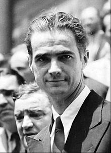

The birthplace of Howard Hughes is recorded as either Humble or Houston, Texas. The date remains uncertain due to conflicting dates from various sources. He repeatedly claimed that his birthday was on Christmas Eve. A 1941 affidavit birth certificate of Hughes that was signed by his aunt Annette Gano Lummis and Estelle Boughton Sharp states that he was born on December 24, 1905, in Harris County, Texas. However, his certificate of baptism recorded on October 7, 1906, in the parish register of St. John's Episcopal Church in Keokuk, Iowa, listed his birth as September 24, 1905 without any reference to the place of birth.
His parents were Howard R. Hughes Sr., a successful inventor and businessman from Missouri of English descent,and Allene Stone Gano of English and French Huguenot descent. Hughes was a descendant of John Gano, a minister who allegedly baptized George Washington His father had patented the two-cone roller bit, which allowed rotary drilling for petroleum in previously inaccessible places. The senior Hughes made the shrewd and lucrative decision to commercialize the invention by leasing the bits instead of selling them, and founded the Hughes Tool Company in 1909. Hughes' uncle was the famed novelist, screenwriter, and film director Rupert Hughes.
Hughes demonstrated interest in science and technology at a young age. In particular, he had great engineering aptitude, building Houston's first "wireless" radio transmitter at age 11.He went on to be one of the first licensed ham radio operators in Houston, having the assigned callsign W5CY (originally 5CY).At 12, Hughes was photographed in the local newspaper, identified as being the first boy in Houston to have a "motorized" bicycle, which he had built from parts from his father's steam engine. He was an indifferent student, with a liking for mathematics, flying, and mechanics. He took his first flying lesson at 14, and later attended math and aeronautical engineering courses at Caltech.
Allene Hughes died in March 1922 from complications of an ectopic pregnancy. Howard Hughes Sr. died of a heart attack in 1924. Their deaths apparently inspired Hughes to include the creation of a medical research laboratory in the will that he signed in 1925 at age 19. Howard Sr.'s will had not been updated since Allene's death, and Hughes inherited 75 percent of the family fortune. On his 19th birthday, Hughes was declared an emancipated minor, enabling him to take full control of his life.
Hughes was an excellent and enthusiastic golfer from a young age, often scoring near par figures, and held a handicap of three during his twenties. He played frequently with top players, including Gene Sarazen. Hughes rarely played competitively, and gradually gave up his passion for the sport to pursue other interests.
Hughes withdrew from Rice University shortly after his father's death. On June 1, 1925, he married Ella Botts Rice, daughter of David Rice and Martha Lawson Botts of Houston. They moved to Los Angeles, where he hoped to make a name for himself as a filmmaker.
Hughes after he sold the tool division of Hughes Tool Company in 1972. The company serves as the principal holding company for Hughes' business ventures and investments. It is primarily involved in aerospace and defense, electronics, mass media, manufacturing, and hospitality industries, but has maintained a strong presence in a wide variety of industries including real estate, petroleum drilling and oilfield services, consulting, entertainment, and mining. Much of his fortune was later used for philanthropic causes, notably towards health care and medical research.
Hughes entered the entertainment industry after dropping out of Rice University and moving to Los Angeles. His first two films, Everybody's Acting (1927) and Two Arabian Knights (1928), were financial successes, the latter winning the first Academy Award for Best Director of a comedy picture. The Racket (1928) and The Front Page (1931) were also nominated for Academy Awards.
Hughes spent $3.8 million to make the flying film Hell's Angels (1930). It earned nearly $8 million, about double the production and advertising costs. Hell's Angels received one Academy Award nomination for Best Cinematography.
He produced another hit, Scarface (1932), a production delayed by censors' concern over its violence.
The Outlaw (1943) was completed in 1941 and featured Jane Russell. It also received considerable attention from industry censors, this time owing to Russell's revealing costumes. Hughes designed a special bra for his leading lady, although Russell decided against wearing it.